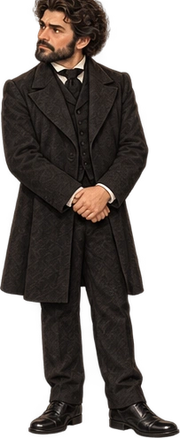
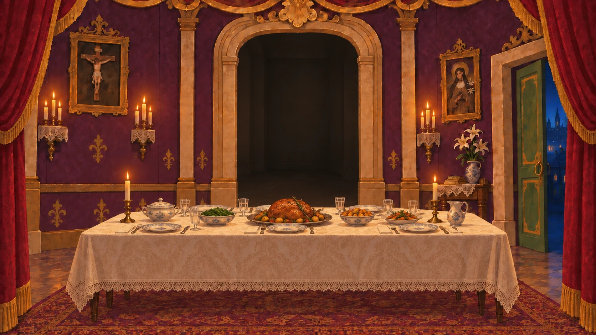
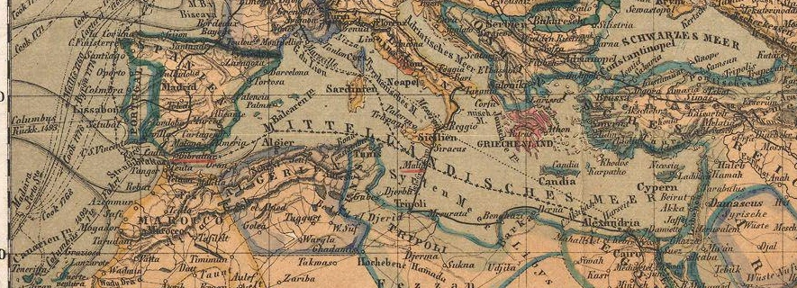

A / D 移动／对白翻页E 交互 · 空格 继续／确认W / S 选择选项R 询问托普修斯 · Tab 背包Esc 返回／暂停 · P 设置 · M 声音
点击对话继续；发光处可以互动。空格推进，Tab选择光点，Esc暂停。第三章：A / D 行走，W / S 选择选项，E 交互，Tab 开合背包；背包中用 W、A、S、D 选择，空格查看，Esc 收起说明或合上背包；旅途中 Esc 暂停。不需要跳跃。也可点击地面行走，靠近物件后点击 E。
设置内用 Tab / Shift+Tab 选择，Enter 确认，← / → 调整音量。